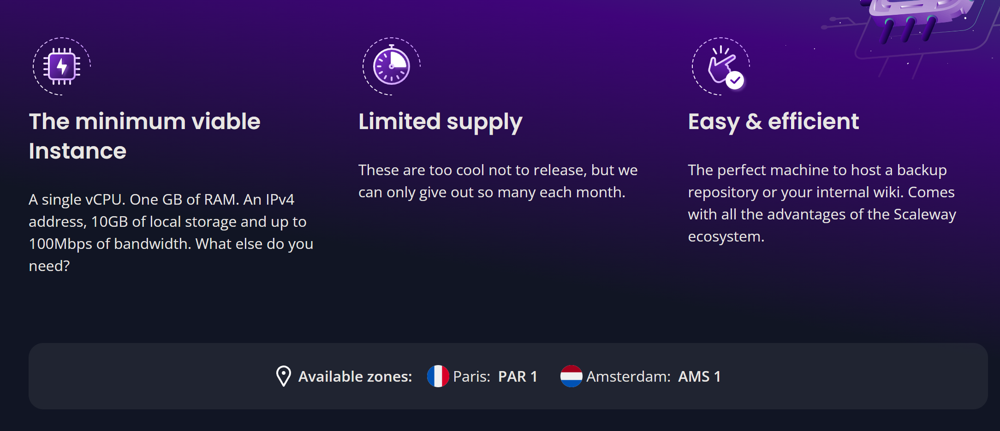
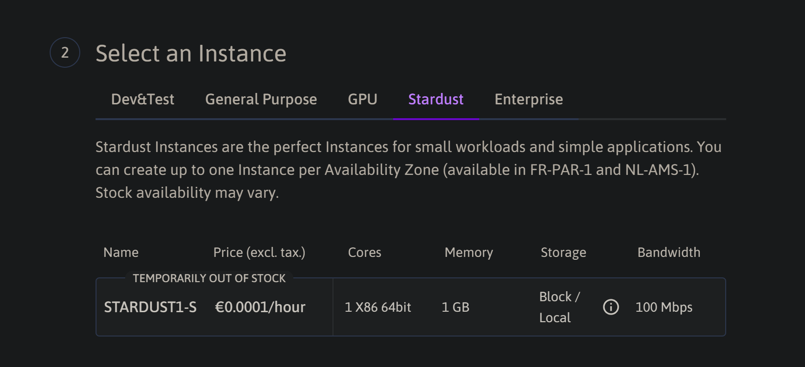
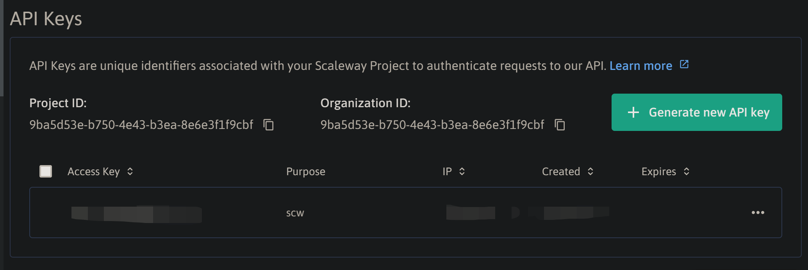
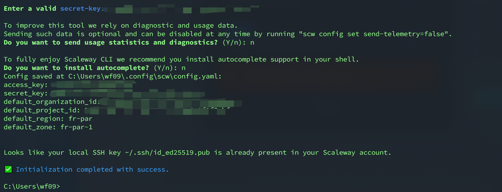
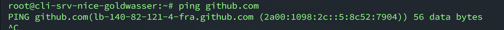
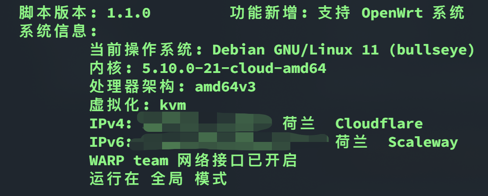
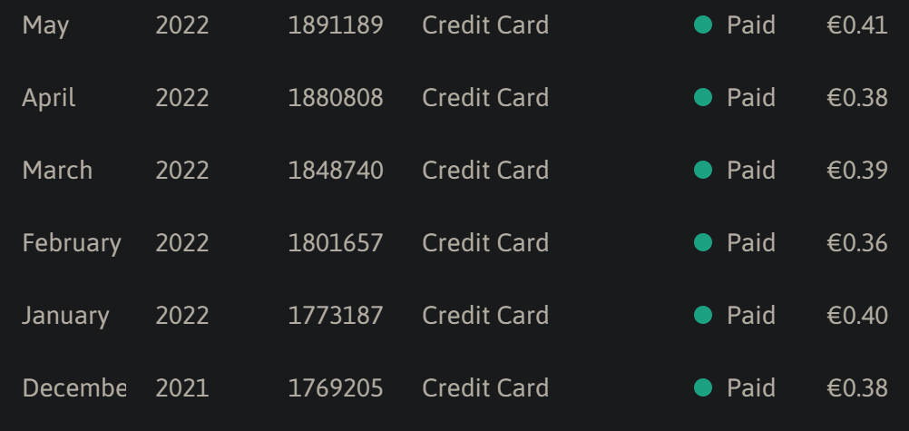

Scaleway星辰Stardust纯IPv6服务器体验
Stardust是法国云服务器厂商Scaleway下的一款的经济实例。官方介绍是这样的——“A tiny Instance so powerful and cost effective that we only release it once a month.”
Stardust可以使用大小为5G的免费硬盘，并带有免费的IPv6地址，因此为了减免费用可以将收费提供的IPv4地址关掉，这样就可以免费使用流量了。
本文主要介绍如何开通Scaleway星辰Stardust服务器，并对其进行一些配置，以便其可以正常使用。
关键词：Stardust
开通
注册地址：https://console.scaleway.com/
Stardust服务器仅仅在以下地区提供：

由于是限量供应，因此网站常常显示已售罄。

可以通过API进行开通，进而绕过此限制。
安装API
下载地址：https://github.com/scaleway/scaleway-cli
安装完毕以后需要创建一个token：https://console.scaleway.com/project/credentials，创建完了以后如下图所示，需要记录Secret Key，该值显示一次。

在cmd或者shell控制台输入scw init，根据提示输入上文记录的Secret
Key.

使用API创建机器
Github的readme提供了很详细的使用说明：https://github.com/scaleway/scaleway-cli#reference-documentation
我们这里需要使用的是instance CLI，点击CLI并选择Ceate server.
根据下面表格中列的信息，设置输入的参数
主要有以下几个参数需要设置
image：服务器镜像，这里使用debian_bullseye, 也可以使用其他
type：服务器类型， 这里使用STARDUST1-S
ip：这里使用none，即不创建IPv4地址
ipv6：这里使用true，创建ipv6地址
zone：地区，默认地区是法国
组合以上参数，在控制台执行：
1 | scw instance server create image=debian_bullseye type=STARDUST1-S ip=none ipv6=true |
说明以及创建成功。
登录后台，查看运行的机器。登录到后台以后发现无法开机器，后来才发现是创建机器的时候没有声明根存储，最小是10G.
重新执行：
1 | scw instance server create image=debian_bullseye type=STARDUST1-S ip=none ipv6=true root-volume=b:10G |
还是无法开机。说明当前地域资源已用尽。于是切换到另外一个荷兰地区。
1 | scw instance server create image=debian_bullseye type=STARDUST1-S ip=none ipv6=true root-volume=b:10G zone=nl-ams-1 |
创建成功啦！
设置机器
注意：需要使用IPv6地址连接。
访问IPv4网络
由于常见的网络地址都是IPv4地址，因此需要赋予机器访问IPv4地址的能力。这里有两种方案。
DNS64和NAT64
使用DNS64和NAT64技术，具体可以参考这一篇文章：Google 公共 DNS64 | Public DNS | Google Developers
简单说就是请求DNS时，将IPv4地址嵌入在IPv6地址里，此时需要有一个支持DNS64服务的DNS。因此只需要将DNS地址更改为支持DNS64服务的地址，就可以实现访问IPv4的网站。
经过我的测试，谷歌的DNS64dns在这一款服务器上无法使用，可能是和网络有关。给出几个可以使用的DNS64服务的地址。
| 提供商 | 国家/城市 | DNS64服务 | NAT64前缀 |
|---|---|---|---|
| Kasper Dupont | 德国/纽伦堡 | 2a01:4f8:c2c:123f::1 | 2a01:4f8:c2c:123f:64::/96 |
| Kasper Dupont | 英国/伦敦 | 2a00:1098:2c::1 | 2a00:1098:2c::/96 |
| Kasper Dupont | 荷兰/阿姆斯特丹 | 2a00:1098:2b::1 | 2a00:1098:2b::/96 |
将DNS更改为以上的DNS服务即可。
1 | sudo vim /etc/resolv.conf |
设置完毕以后发现可以访问github.com了。

但是这种方式也有一定的问题，就是无法访问纯ipv4地址，下面来看第二种方案。
Cloudflare warp
warp是Cloudflare基于wireguard提供的一款免费软件，可以通过其经过ipv6地址访问ipv4的网站，也可以访问纯ipv4的地址。
可以使用一键脚本，已经开源在GitHub上：fscarmen/warp: WARP one-click script. Add an IPv4, IPv6 or dual-stack CloudFlare WARP network interface and Socks5 proxy for VPS. 一键脚本 (github.com)
根据脚本的提示操作即可。

实测这种方式最方便。
性能测试
安装经典的bench.ch脚本测试以下服务器的性能
1 | wget -qO- bench.sh | bash |
相比于国内某些厂商提供的服务器，性能还是非常不错的。
账单
这款机器如果只开IPv6，系统盘设置为最小10G，则每个月只需要不到0.5欧元。还不到人民币五块钱。如果你那里IPv6连接比较好，可以试试这一款服务器。

全文完。